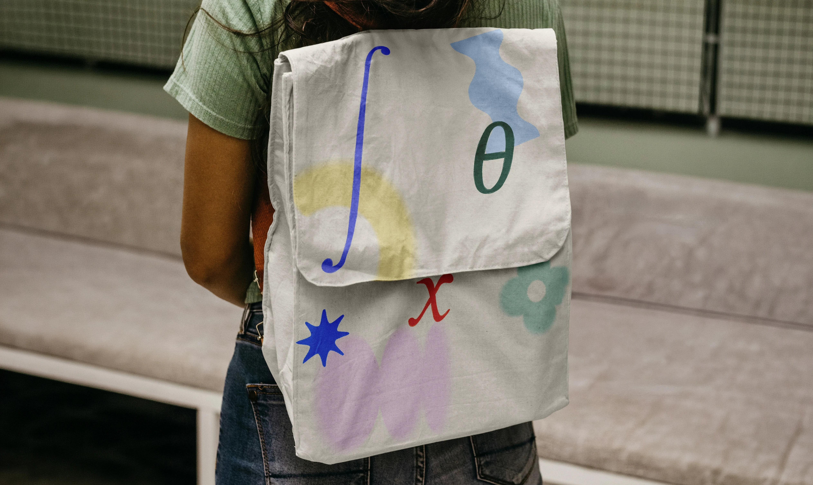

Brand · Web design · Motion
Jessie's Notes
🏆 Indigo Awards 2026Jessie's Notes helps Year 12 students master HSC Maths through clear video lessons and exam-style practice. I led the brand roll-out and built the full site on Webflow — logo, colour system, UI and launch animation — with no existing guidelines to start from.
Winner — Indigo Awards 2026, recognised for web design and brand execution.
The problem
With no brand guidelines and inconsistent results from freelancers, Jessie's Notes needed a wholistic identity and web presence that matched the quality of the teaching itself.
The solution
A friendly, confident brand system — logo, colour, type — rolled out across a Webflow build that feels structured and reliable, exactly like the material it teaches.
Brand


